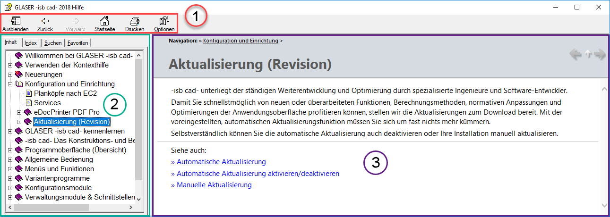
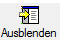
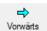
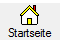
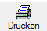
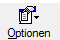
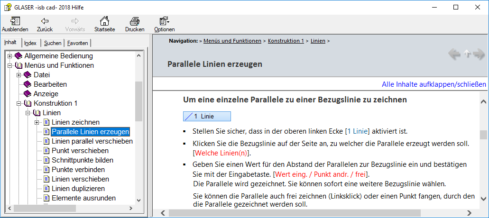

Die Oberfläche der Kontexthilfe gliedert sich in drei Hauptbereiche, die Menüleiste, den Navigationsbereich und den Anzeigebereich. Bei Bedarf lässt sich die Kontexthilfe an den Ecken mit gedrückter Maustaste verkleinern oder vergrößern.

1 = Menüleiste
2 = Navigationsbereich (Registerkarten Inhalt, Index, Suchen, Favoriten)
3 = Anzeigebereich des im Inhaltsverzeichnis markierten Themas (Artikel)
Menüleiste
In der Menüleiste finden Sie grundlegende Funktionen, um die Anzeige anzupassen, in der Hilfe zu navigieren und bestimmte Inhalte zu drucken.
Funktion |
Beschreibung |
|---|---|
 |
Blendet das Navigationsfenster der Hilfe aus oder ein. |
Ruft den vorher geöffneten Artikel jeweils mit einem Klick auf. |
|
 |
Artikel in der Verlaufshistorie vorwärts blättern. |
 |
Ruft die Startseite der Kontexthilfe auf. |
 |
Druckt den im Anzeigebereich markierten Artikel aus. Falls ein Hauptkapitel markiert ist, kann dieser mit allen enthaltenen Unterkapiteln ausgedruckt werden. |
 |
Klicken Sie auf diese Schaltfläche, um weitere Optionen zu öffnen. -Registerkarte (Navigationsfenster) ausblenden -Artikel zurück und vorwärts blättern, Startseite aufrufen -Abbrechen -Aktualisieren -Internetoptionen... -Suchbegriffshervorhebung deaktivieren |
Navigationsbereich
Der Navigationsbereich bietet Ihnen vielfältige Suchoptionen.
Karte |
Beschreibung |
|---|---|
Inhalt |
Zeigt die Inhaltsübersicht der Kontexthilfe an. Jedes einzelne Hilfethema kann per Mausklick geöffnet werden. Das markierte Hilfethema wird blau hinterlegt und der zugehörige Artikel im Anzeigebereich angezeigt. |
Index |
Stellt Ihnen ein umfangreiches Indexregister zur Verfügung. Tippen Sie ein Stichwort ein und klicken Sie mit einem doppelten Mausklick auf einen gefundenen Eintrag, um sich den entsprechenden Artikel anzeigen zu lassen. |
Suche |
Über die Volltextsuche haben Sie die Möglichkeit, einen Artikel über die Eingabe eines speziellen Begriffs zu suchen. Sie können Wildcard Ausdrücke, verschachtelte Ausdrücke, Boolesche Operatoren, ähnliche Worttreffer, die letzte Ergebnisliste oder Themenüberschriften verwenden, um Ihre Suche zu verfeinern. Wenn Sie z. B. nach Artikeln suchen möchten, die Maßketten thematisieren, tippen Sie einfach den Begriff "Maßkette" ein und klicken Sie auf Themen auflisten. In einer Tabelle, unterhalb des eingegebenen Begriffs, werden alle Ergebnisse nach der Anzahl der Treffer in den durchsuchten Artikeln aufgelistet. Tipp: Verwenden Sie Boolesche Operatoren (AND, OR, NEAR, NOT), um die Suche einzugrenzen und diese noch effektiver durchzuführen. Z. B.: "Maßkette NOT Systemdaten". In diesem Fall werden alle Artikel aufgelistet, die den Begriff "Maßkette" enthalten, aber nicht Systemdaten. |
Favoriten |
Auf der Registerkarte Favoriten können Sie den aktuell geöffneten Artikel mit einem Lesezeichen versehen. Diese Funktion bietet sich besonders bei häufig verwendeten Artikeln an, die über Favoriten schneller und einfacher gefunden und aufgerufen werden können, als über den Index oder die Suche. Wenn Sie einen Artikel der Liste hinzufügen, steht Ihnen dieser, auch nach dem Schließen der Kontexthilfe, bei jedem Aufruf der Kontexthilfe zur Verfügung. |
Anzeigebereich
Im Anzeigebereich wird der auf der Registerkarte Inhalt markierte Artikel (hier: Parallele Linien erzeugen) angezeigt. Über der Überschrift "Parallele Linien erzeugen" wird der Navigationspfad des Artikels innerhalb des Inhaltsverzeichnisses angezeigt. Klicken Sie beispielsweise im Anzeigebereich unter Navigation auf "Konstruktion 1", gelangen Sie automatisch in das dem Artikel und Unterkapitel übergeordnete Kapitel.

Siehe auch: